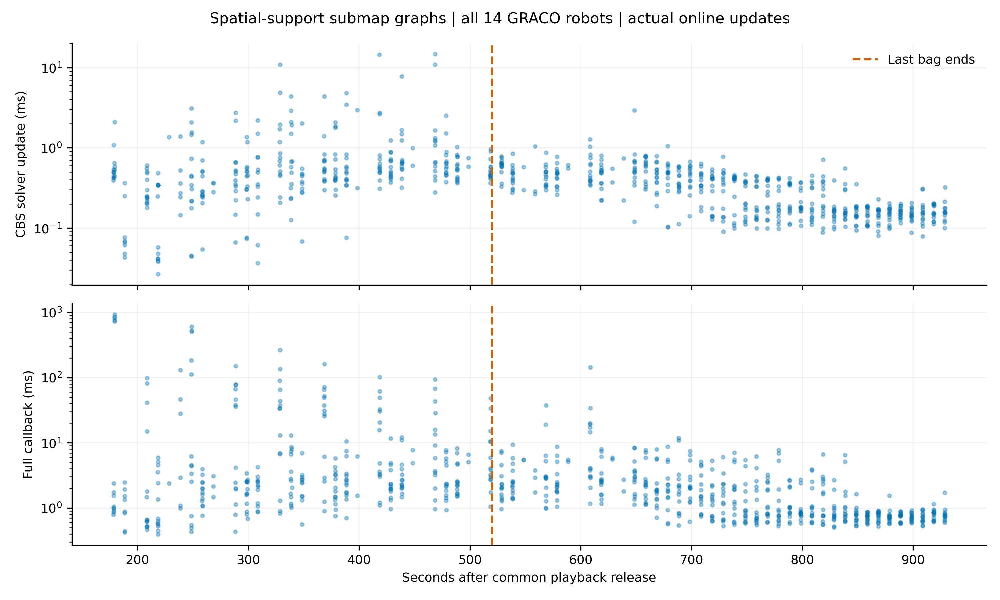
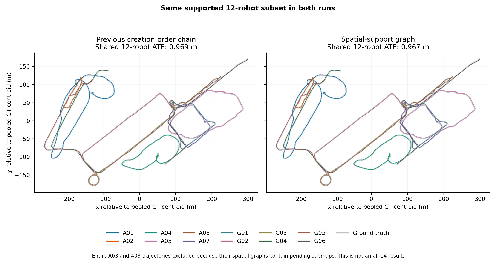
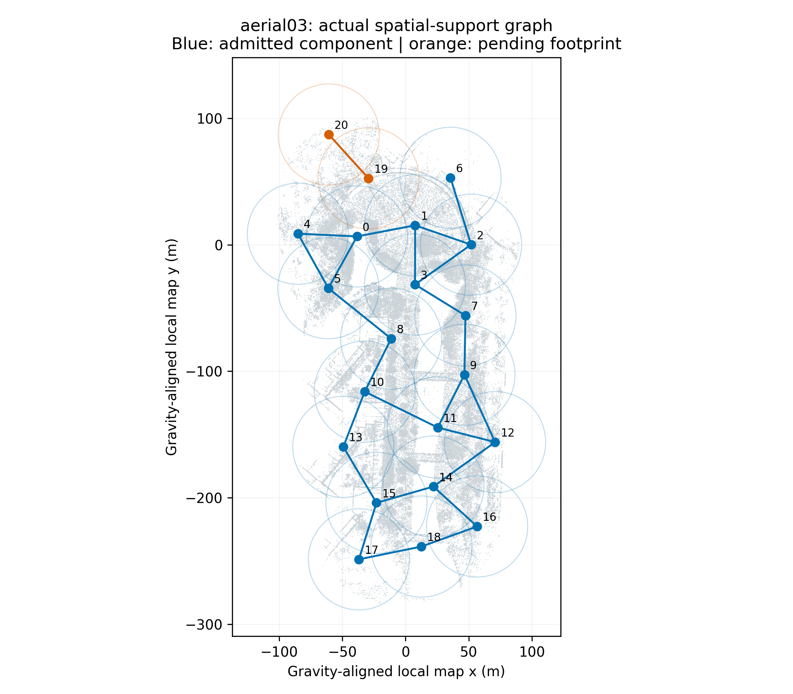

3 submaps remain pending. Their geometry has no accepted local path to the reference submap. The present one-anchor-per-robot CBS interface cannot activate a fragment through an inter-robot loop alone. No artificial links were added; no all-14 joint ATE or global PLY is claimed. Subset accuracy excludes entire trajectories for aerial03, aerial08 in both methods. Evo 1.36.5 uses corrected GRACO IMU-reference ground truth, 50 ms association, one shared rigid alignment, and no scale fit.
| Metric | Prior chain | Spatial support |
|---|---|---|
| Published submaps | 366 | 355 |
| PCM-retained loops | 111 | 113 |
| Pending submaps | 0 | 3 |
| Total application communication (MB) | 546.767 | 526.967 |
| PCM (MB) | 1.206 | 1.731 |
| CBS (MB) | 3.412 | 4.837 |
| Registration geometry (MB) | 17.752 | 19.195 |
| Retrieval / verification (MB) | 524.398 | 501.204 |
| Root-frame groups | 1 | 1 |
| Local map factors | 352 | 439 |
| CBS solver median (ms) | 0.351 | 0.367 |
| CBS solver p95 (ms) | 1.003 | 1.363 |
| CBS solver maximum (ms) | 4.499 | 14.744 |
| Full callback p95 (ms) | 32.230 | 37.464 |
| Wall time (s) | 913.152 | 943.340 |
| Peak simultaneous RSS (GiB) | 42.337 | 42.204 |
| Joint ATE on the same 12-robot supported subset (m) | 0.969 | 0.967 |
All 14 native replays completed without divergence. Maximum speed: 5.428 m/s; longest successful-LiDAR-update gap: 0.232 s. All 14 Rerun recordings passed verification. The independent audit checked sealed geometry membership, immutable payloads, causal availability and native calibration. All robot reference frames connected; three local submaps did not. No chronological fallback edges were inserted.
These are fresh independent online replays; scheduling, odometry, geometry and retrieval opportunities can differ. Communication excludes DDS/IP/discovery, sensors, visualization and report downloads. The spatial result is incomplete, so costs are not comparisons at an equivalent final outcome.

810 measured updates across all robots. Solver time is separate from the full callback; terminal callbacks without timer rows are omitted. Vector plot · Measured updates.

Both panels use one shared rigid evo alignment for the same 12 robots. The plotted view is horizontal; ATE uses all three position coordinates. Subset selection depends only on graph connectivity, not on error. Vector figure.
| Robot | Raw individual ATE (m) | Spatial corrected individual ATE (m) |
|---|---|---|
| aerial01 | 0.181 | 0.225 |
| aerial02 | 0.059 | 0.093 |
| aerial03 | 0.061 | Not evaluated: pending submaps |
| aerial04 | 0.108 | 0.134 |
| aerial05 | 0.186 | 0.185 |
| aerial06 | 0.060 | 0.076 |
| aerial07 | 0.076 | 0.117 |
| aerial08 | 0.125 | Not evaluated: pending submaps |
| ground01 | 0.296 | 0.303 |
| ground02 | 0.648 | 0.659 |
| ground03 | 0.596 | 0.555 |
| ground04 | 0.515 | 0.494 |
| ground05 | 0.476 | 0.464 |
| ground06 | 0.444 | 0.462 |
Individual ATEs each use a separate rigid fit. They do not measure inter-robot alignment.
{
"aerial01": [],
"aerial02": [],
"aerial03": [
19,
20
],
"aerial04": [],
"aerial05": [],
"aerial06": [],
"aerial07": [],
"aerial08": [
19
],
"ground01": [],
"ground02": [],
"ground03": [],
"ground04": [],
"ground05": [],
"ground06": []
}
Blue is the admitted local component; orange is the unsupported fragment. This is a local map layout, not a joint alignment.